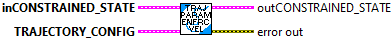
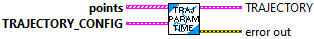

Internal routine called by TrajectoryParam_timeParam.VI

Internal routine called by TrajectoryParam_timeParam.VI

Internal routine called by TrajectoryParam_timeParam.VI
This routine enforces acceleration constraints and updates the ConstrainedState value based on the calculated limits.
This routine will need to be updated whenever a new constrained state type is added.
------------------------------------------------------------------------------------------
Parameters:
- InConstrainedState
- Reversed
- TrajectoryConfig
Returns
- OutConstrainedState

Internal routine called by TrajectoryParam_timeParam.VI
This routine enforces velocity constraints and updates the ConstrainedState value based on the calculated limits.
This routine will need to be updated whenever a new constrained state type is added.
------------------------------------------------------------------------------------------
Parameters:
- InConstrainedState
- TrajectoryConfig
Returns
- OutConstrainedState
- error out

Parameterize the trajectory by time. This is where the velocity profile is generated.
The derivation of the algorithm used can be found here "http://www2.informatik.uni-freiburg.de/~lau/students/Sprunk2008.pdf"
- points - The spline points.
- TrajectoryConfig - Trajectory Config data structure (it contains - start velocity, end velocity, max velocity, max acceration, reversed, and constraint data)
Returns:
- Trajectory - Trajectory data structure
- Error Out - Returned error cluster